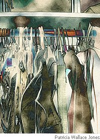

Gail White
Death of a Doorman
An angel stood outside my door
where, like a candle melting wax,
all day he burned; all night he bore
the guilt of my accomplished acts.
I scarcely noticed him except
when walking out the door, and then
so fervently he shook and wept,
I left him quite alone again.
So, when he left, I thought the cat
was guilty of the ghostly trail
of feathers on the welcome mat.
But who left ashes in the mail?
And now the guilt he helped me shed
has left the door and moved inside.
How can I know my angel’s dead?
Can Gabriel have it certified?
Oh well, I’ve bought new curtains since,
and find his memory growing dim.
I wish I were not half-convinced
all fires had gone out with him.
After She Died
Her clothes took on a strange significance
without her standing in the door to choose
among the ranks of dresses, skirts, and pants,
the shelf of hats, the tidy row of shoes.
Her body wasn’t there, although he tried
to see it in the dark. He never found
the hangers parted by her hand, the slide
of some unwanted garment to the ground.
The clothes began to haunt him like a ghost.
They huddled in the closet, gathering
infernal strength, till from their innermost
recess the vampire clothes were whispering,
“Her flesh was mortal. We are here to stay.”
He couldn’t wait to give them all away.
Gail White helps prop up the Formalist movement from her base in Breaux Bridge, Louisiana, with recent work at Mezzo Cammin, The Raintown Review, and The Lyric. Theoretically, she has two books in the works, one at Word Tech and one at Prospero’s Press. Believe it when you see it.
|